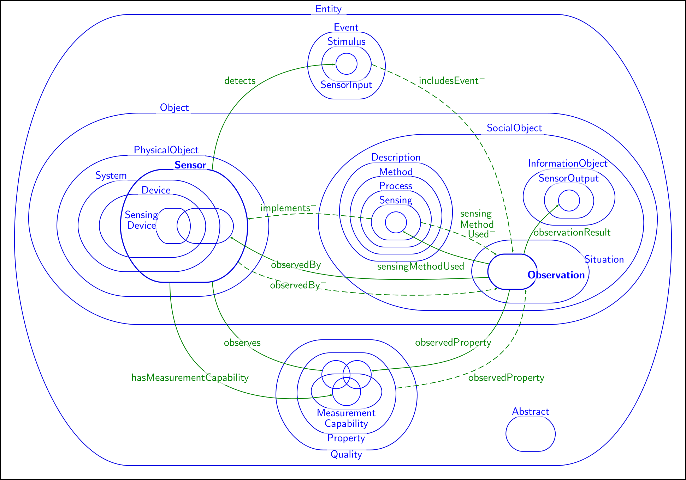

- Define the question
- Information seeking
- Generating large diagrams
- Navigating large diagrams
- Future work
- Conclusion
Overview
Define the question
Euler Diagrams
Large Euler Diagrams I
- Let's look at some examples from the literature.
Blake et al.

Rodgers (2014)

Riche & Dwyer (2010)

Large Euler Diagrams II
- Let \(d\) be a diagram displayed on a screen. If \(d\) is unreadable, then we say that \(d\) is a large diagram.
- This definition suffices as a working definition.
- It allows us to remain abastracted from a discussion on the size or quality of screens.
More motivation for large Euler Diagrams I

More motivation for large Euler Diagrams II

Generating and Navigating Large Euler Diagrams
- We wish to generate diagrams that do not comfortably fit on a screen.
- Furthermore, we wish to navigate these diagrams to find information within them.
- At this point we could do with a theory of information seeking.
Information Seeking
Shneiderman’s information seeking mantra
- overview first,
- zoom & filter, then
- details-on-demand.
We'll consider each of the above using a Chess program as an example.
Overview first I

Overview first II

Zoom & Filter I

Zoom & Filter II

Details-on-Demand I

Details-on-Demand II

Generating Large Diagrams
Manual Generation of Euler Diagrams

Activity
A real world(ish) example
Draw an Euler diagram describing the following facts:
- A Social Object is not a Physical Object.
- A Sensor is a Physical Object.
- An Observation is a Social Object.
- A Device is a Physical Object.
- A Sensing Device is a Device and is a Sensor.
Automatic Generation of Euler Diagrams
List of Automatic Generation algorithms
- iCircles -- As seen in Speedith.
- G. Stapleton, J. Flower, P. Rodgers and J. Howse. Automatically Drawing Euler Diagrams with Circles. Journal of Visual Languages and Computing, 23(3):163–193, 2012.
- EulerAPE -- Also see EulerForce.
- L. Micallef and P. Rodgers "eulerAPE: Drawing Area-Proportional 3-Venn Diagrams Using Ellipses", 2014.
- VennMaster
- H. Kestler, et al. "Generalized Venn diagrams: a new method of visualizing complex genetic set relations." Bioinformatics 21.8, 2005.
- VennFS2
- R. De Chiara, U. Erra and V. Scarano, "VENNFS: A Venn-Diagram File Manager" IV, 2003.
- VennEuler
- L. Wilkinson "Exact and Approximate Area-Proportional Circular Venn and Euler Diagrams", IEEE Visualization and Computer Graphics, 2012.
iCircles
Demo time
Generating (almost) Arbitrarly Large Diagrams
- Our large diagrams are sparse.
- Diagrams are generated for the purpose of navigating.
- We use iCircles to generate small clusters.
- Then use WebCola to layout the clusters.
- (Note: the prototype is un-demoable).
A Large Diagram

Navigating Large Diagrams
Anchoring the Diagram I

Anchoring the Diagram II

Overview

Zoom & Filter

Details-on-Demand I

Details-on-Demand II

Future Work & Conclusion
Future Work
- This is preliminary work and requires a good prototype implementation.
- We need large real-world datasets to layout (probably biological).
- Comparative studies with other visualisations for large Euler diagrams.
Conclusion
- We have used Shneiderman’s information visualisation framework to consider how to navigate large Euler diagrams.
- We'd like to think of other ways to navigate large Euler diagrams.
<Thank You!>